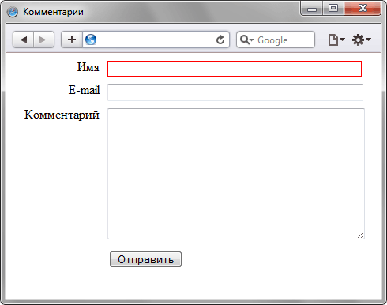

Псевдокласс :required
Применяет стилевые правила к элементу <input>, у которого установлен атрибут required. Он позволяет выделять поля обязательные к заполнению перед отправкой формы.
Синтаксис
input:required { ... }Пример
<!DOCTYPE html>
<html>
<head>
<meta charset="utf-8">
<title>Комментарии</title>
<style>
#comment p {
margin: 0 0 5px; /* Отступ снизу */
}
#comment label {
width: 110px; /* Ширина текста */
float: left; /* Выстраиваем по горизонтали */
text-align: right; /* Текст по правому краю */
padding-right: 10px; /* Поле справа */
}
#comment input[type="text"], #comment textarea {
width: 320px; /* Ширина текстовых полей */
}
input:required {
border: 1px solid red; /* Красная рамка для обязательных полей */
}
</style>
</head>
<body>
<form id="comment">
<p><label for="user">Имя</label>
<input id="user" type="text" required></p>
<p><label for="email">E-mail</label><input id="email" type="text"></p>
<p><label for="text">Комментарий</label>
<textarea cols="40" rows="10" id="text"></textarea></p>
<p><label> </label><input type="submit" id="send" value="Отправить"></p>
</form>
</body>
</html>В данном примере обязательным считается поле для ввода имени, оно выделяется красной рамкой за счёт применения псевдокласса :required. Результат примера в Safari 5 показан на рис. 1.

Рис. 1. Использование псевдокласса :required
Спецификация
| Спецификация | Статус |
|---|---|
| WHATWG HTML Living Standard | Живой стандарт |
| HTML5 | Возможная рекомендация |
| Selectors Level 4 | Рабочий проект |
| CSS Basic User Interface Module Level 3 | Рабочий проект |
Браузеры
| Internet Explorer | Chrome | Opera | Safari | Firefox |
| 10 | 10 | 10 | 5 | 4 |
| Android | Firefox Mobile | Opera Mobile | Safari Mobile |
| 4 | 4 | 10 | 5 |